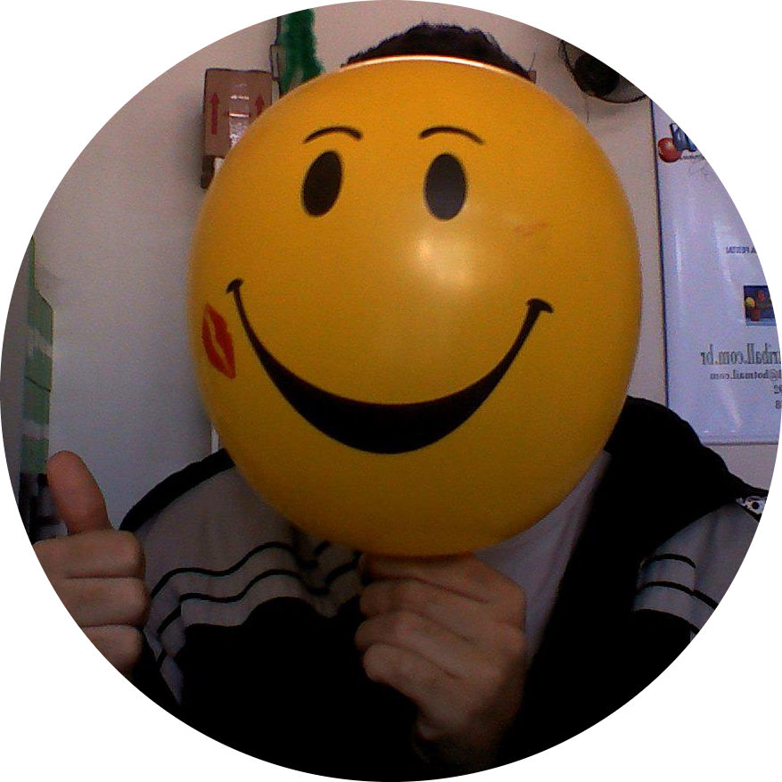
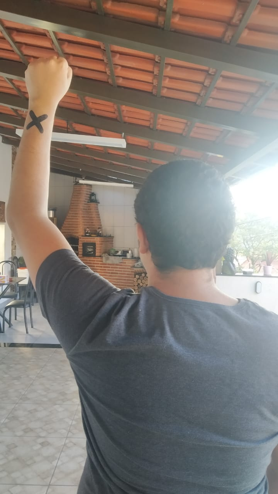

lucasnerism
Curtido por kayds e outras 322.322 pessoas
lucasnerism kkkkkkk alá os cara gosta de pirata que estica
monkeydluffy kaizoku ou ni ore wa naru
boahancock sim
Ver todos os comentários
HÁ 2 HORAS
Ver original